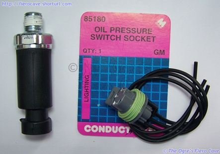
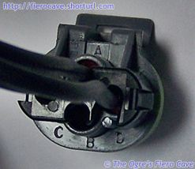

Go Home
Site Map
Go Home
Site Map
Oil Pressure Sender
V6 & AC TSB
Applies to Fiero 1985-1988 V6 with AC.
Owners should modify the sender location per this TSB instruction. I recommend you ignore the "Shield" note in TSB for 1985-87 and update to 88 sender and modify the tube for 88 uses in TSB.
Oil Pressure Sender Upgrade
Applies to all GM cars that uses old style sender.
Why?
- Many auto part store has dropped the old one from inventory at the store. You have to order it.
- The plug is old, dirty, oily, and gives bad/loose connector.
- The old sender was an old design and its diagram is prone to leak.
How bad a leak? A small drip to a quart in 50-100 miles or less. Anytime you are leaking oil, especially if the leak is big, check the oil plug, oil filter, and Sender!
Remember... Sensor reads oil pressure and gives fuel pump "backup" power. Two switches in fuel pump circuit is a good thing. Two switches, and good connections, means lower Ohms = less voltage drop and more power the fuel pump can use.
You need:
- 88 Oil Pressure Switch.
- 88 Switch Socket. Dorman part # 85180, AIRTEX/WELLS Part # 1P1053, STANDARD Part # S637 or equiv.
Dorman is use here but other parts source is good to. See rockauto.com etc.

Pins are marked!

| Old Socket pin | Old wire color | New Socket pin | 88 wire color | What |
|---|---|---|---|---|
| A | Orn/Blk | C | Orn/Blk | F pump from hot |
| B | Tan | A | Tan | Oil pressure |
| C | Tan/Wht | D | Tan/Wht | F pump to tank |
New Socket pin B is not use, or even has a hole, in the Dorman part.
Yes, 85-88 use same wire color, both engines.
Use weather proof butt crimp connector. Or better, many people don't have good crimpers, use Posi-Lock connectors or solder it then cover it with weather proof shrink tube.